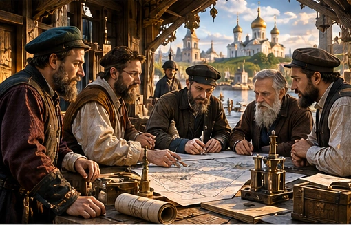
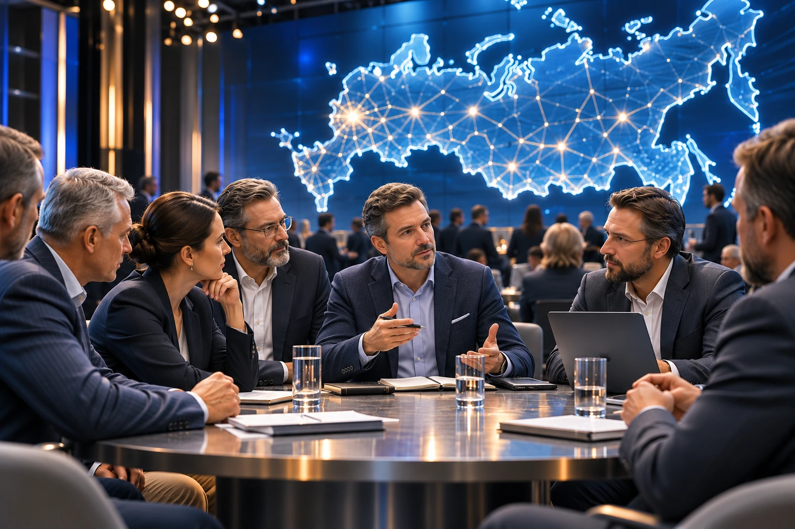
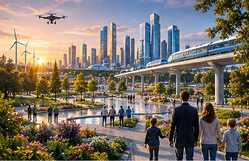
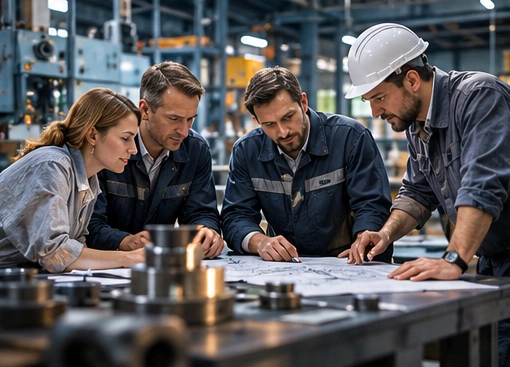
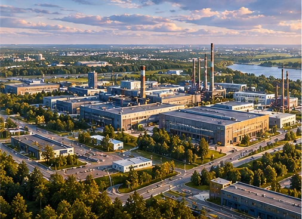
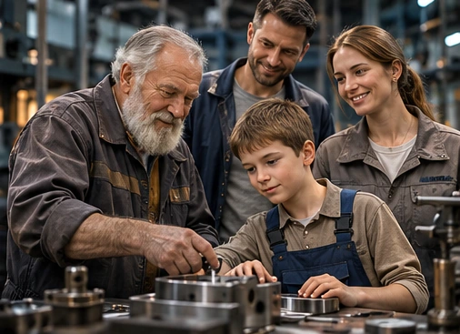
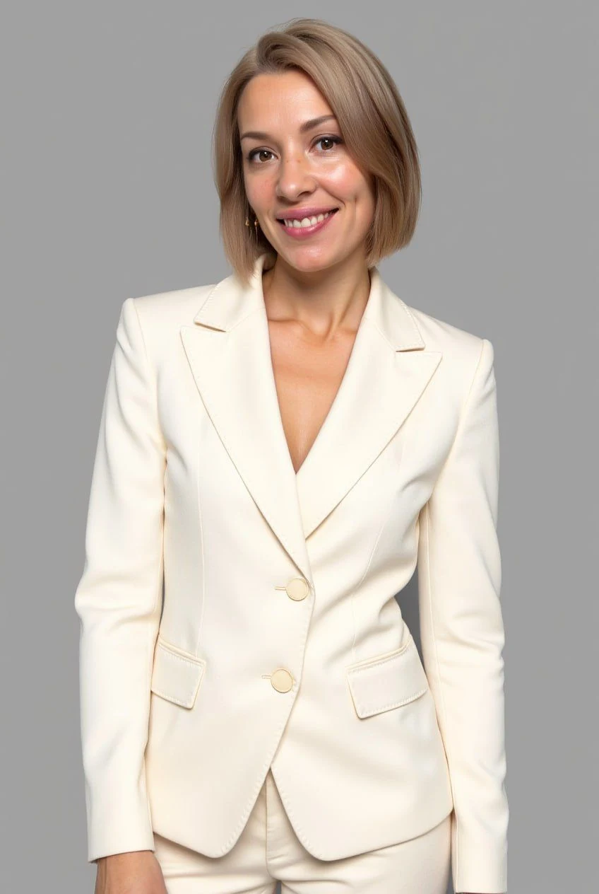

I01 / ИСТОКИПрошлое
Кто начинал дело, какие ценности и решения определили его развитие.
Истории людей дела, команд и альянсов, которые создают настоящее и формируют будущее России.
Показать Россию через людей дела, их команды и альянсы, которые создают будущее страны.
Мы рассказываем, как доверие объединяет знания, опыт и ресурсы. Как люди из разных сфер находят друг друга, строят сотрудничество, создают предприятия, развивают регионы и передают результаты следующим поколениям.
Творческая концепция проекта →О сильных личностях рассказывают часто. «Мастера России» раскрывают то, что обычно остаётся за кадром: как формируется доверие, возникают команды и альянсы, а совместные решения превращаются в реальные результаты.
Мы показываем не только итог, но и путь: от истоков дела — к сегодняшним достижениям и следующему горизонту.

I01 / ИСТОКИКто начинал дело, какие ценности и решения определили его развитие.

II02 / РЕЗУЛЬТАТЛюди, команда, производство, образование, сотрудничество и то, что уже создано.

III03 / ГОРИЗОНТКакой герои видят Россию через 10, 20 и 50 лет — и что делают для этого сегодня.
От умения работать вместе — к альянсам нового масштаба и делу поколений.

01Люди с разным опытом, характерами и возможностями объединяются вокруг общего дела и создают то, что в одиночку было бы невозможно.
ТеглайнПочувствуй силу тех, кто действует вместе.

02Когда задача становится больше возможностей одной команды, рождается альянс — объединение людей, компаний, технологий и ресурсов ради общего результата.
ТеглайнСоздай масштаб, который невозможно создать в одиночку.

03Каждая семья думает, что строит жизнь с нуля, пока однажды не понимает: многое началось задолго до неё.
ТеглайнСоздано поколениями, воплощается веками.
Предварительный формат: 6 или 12 серий в сезоне; хронометраж одной серии — 26 минут.
Идея, режиссура, сценарий, производство и партнёрства — разные компетенции, объединённые одной задачей.

Инициатива, стратегия, работа с героями и предпринимателями, партнёрства.
«Мы показываем будущее России через судьбы тех, кто жил до нас, и тех, кто создаёт её сегодня. Россия — наш общий дом».
Подробнее об участнике →
Режиссура, визуальный язык, драматургия и сценарная разработка.
«Нам важно создавать настоящее кино — с живыми героями и сильной драматургией, раскрывающей историю России».
Фильмография и награды →
Организация производственных процессов, работа со специалистами и образовательной средой МГИК.
«Это своевременный проект: сегодня особенно важно показывать созидательный труд и людей, объединённых общим делом».
Фильмография и награды →Сценарная архитектура сезона, драматургия историй и работа с героями.
«Мы любим историю нашей страны и хотим сохранить память о людях, которые создавали её прошлое и продолжают создавать будущее».
«Архитектор Света». Архитектор, преподаватель, идеолог.

Внедряю искусственный интеллект в работу специалистов и организаций. Вместе с командой разрабатываю и веду программы по прикладному ИИ в лицензированной образовательной организации, где просвещение — основная деятельность.
Фразы участников — редакция для согласования перед публичным использованием в качестве цитат.
История предприятия, команды, сообщества или альянса может стать самостоятельным экранным рассказом или частью большой линии сезона.
Первое экранное воплощение идеи, героев и визуального языка проекта.
История людей, их дела, команды или альянса — с собственной драматургией.
Несколько взаимосвязанных историй, раскрывающих общее дело и развитие сотрудничества.
Формат участия обсуждается индивидуально. Производственный план размещается на отдельной странице и дополняется режиссёрской группой.
Начинаем с профессионального тизера, сценарного пакета первого сезона и подготовки производственной модели.
Результат — материалы, с которыми можно предметно обсуждать дальнейшее производство и размещение с потенциальными партнёрами и площадками.
Подробнее об инвестиционном этапе →Тизер + сценарная разработка + подготовка производства
Приглашаем предпринимателей, инвесторов и партнёров к разговору о проекте «Мастера России» и возможностях участия.
Первый шаг — личное знакомство и обсуждение творческой идеи, героев и формата сотрудничества.